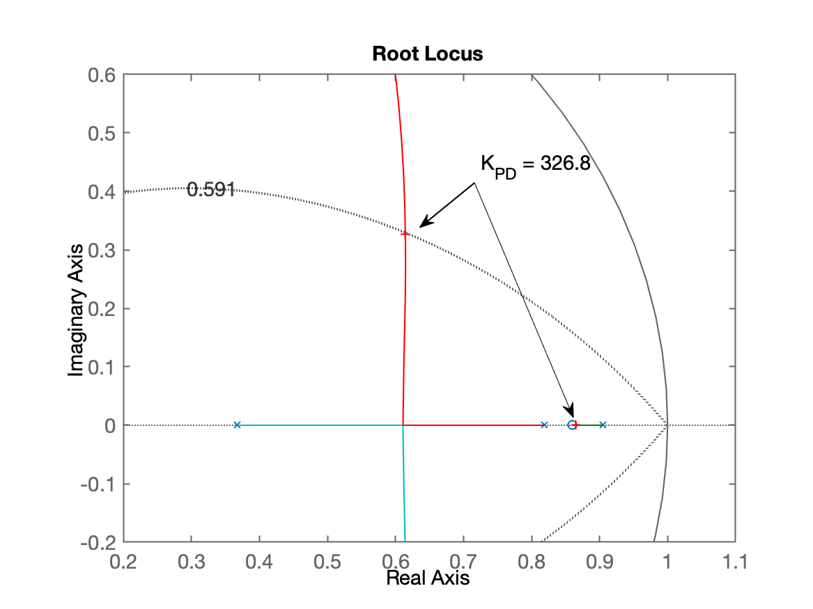
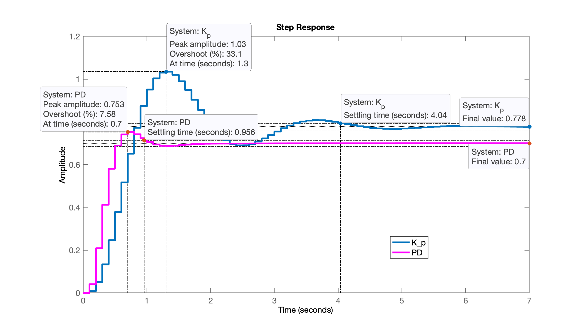
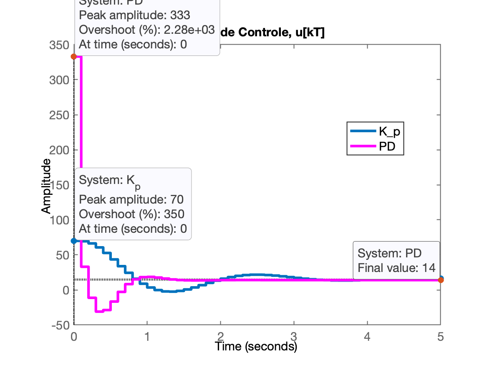
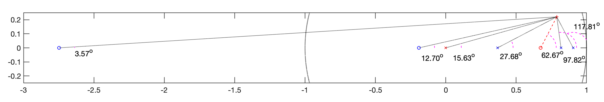

Projeto de Controladores com Ação Derivativa
Continuação da aula de 03/04/2024 - arquivos com dados: planta.mat.
Teoria, ver:
Continuando da seção de trabalho anterior:
x>> load planta>> zpk(BoG)ans = 0.00012224 (z+2.747) (z+0.1903) -------------------------------- (z-0.9048) (z-0.8187) (z-0.3679) Sample time: 0.1 secondsDiscrete-time zero/pole/gain model.Baseado na discussão apresentada na Aula de 28/05/2020, vamos testar a opção "b" (zero do PD entre os 2 pólos mais lentos da planta):
xxxxxxxxxx>> z_PD = (0.9048+0.8187)/2z_PD = 0.86175>> % C_PD=tf([], [], T)>> C_PD=tf([1 -0.86], [1 0], T)C_PD = z - 0.86 -------- z Sample time: 0.1 secondsDiscrete-time transfer function.>> ftma_PD = C_PD*BoG;>> zpk(ftma_PD) 0.00012224 (z+2.747) (z-0.86) (z+0.1903) ---------------------------------------- z (z-0.9048) (z-0.8187) (z-0.3679) Sample time: 0.1 secondsDiscrete-time zero/pole/gain model.>> rlocus(ftma_PD);>> OS % lembrando valor adotadoOS = 10>> zeta % veriricando valor usadozeta = 0.59116>> hold on; zgrid(zeta,0)>> % Sintonizando o PD>> axis([0.2 1.1 -0.2 0.6]) % zoom na região de interesse>> [K_PD,polosMF] = rlocfind(ftma_PD)Select a point in the graphics windowselected_point = 0.61694 + 0.32632iK_PD = 326.8polosMF = 0.8652 + 0i 0.61459 + 0.32629i 0.61459 - 0.32629i -0.042874 + 0i>> K_PD = 333; % valor adotado% fechando a malha>> ftmf_PD = feedback(K_PD*ftma_PD, 1);>> pole(ftmf_PD) % por acaso, os pólos de MF 0.86511 + 0i 0.61453 + 0.33086i 0.61453 - 0.33086i -0.043428 + 0iRL resultante para este PD:

Fechando a malha...
xxxxxxxxxx>> figure; step(ftmf_PD)>> stepinfo(ftmf_PD) RiseTime: 0.3 SettlingTime: 1 SettlingMin: 0.68731 SettlingMax: 0.75282 Overshoot: 7.5782 Undershoot: 0 Peak: 0.75282 PeakTime: 0.7Resposta ao degrau unitário:

Comentários:
No gráfico, já se percebe um erro de regime permanente de .
Repare no valor máximo de - abaixo dos 1,0 da . Isto significa que poderia ter adotado um ganho maior para este PD.
Comparando esta resposta com o controlador proporcional sintonizado para em relação à :
xxxxxxxxxx>> figure; step(ftmf3, ftmf_PD)>> legend('K_p', 'PD')
O PD proposto foi mais rápido que o controlador proporcional, mas... o erro de regime permanente é maior.
O PD conseguiu ser mais rápido que o controlador Proporcional... Mas a um custo... repare no valor do seu ganho, , isto significa que .
Calculando as ações de controle...
xxxxxxxxxx>> aux_Kp3 = K3/(1+K3*BoG);>> aux_PD = (K_PD*C_PD)/(1+K_PD*ftma_PD)aux_PD = 333 z^5 - 982.8 z^4 + 1057 z^3 - 484.5 z^2 + 78.05 z ---------------------------------------------------- z^5 - 2.051 z^4 + 1.459 z^3 - 0.3541 z^2 - 0.0183 z Sample time: 0.1 secondsDiscrete-time transfer function.>> figure; step(aux_Kp3, aux_PD)>> axis([0 5 -50 350])>> legend('K_p', 'PD')>> title('Ação de Controle, u[kT]')
Repare no valor inicial das ações de controle:
xxxxxxxxxx>> 333/70 % comparando u[0] de cada controladorans = 4.7571
Projeto de PD usando Contribuição Angular
Voltando para a página Projeto de PD e Lead (aula de 28/05/2020)...
Para realizar um projeto deste tipo necessitamos mais requisitos de controle, no caso, além do (que permitiu determinar o ), necessitamos algum critério temporal: , ou .
Vamos supor que desejamos:
- ;
- segundos.
Com estes 2 dados, temos como calcular a posição desejada para o par de pólos complexos que num sistema de 2a-ordem em malha-fechada permite atingir estes critérios.
Vamos usar um script já disponibilizado em aulas anteriores, o angulos2.m (que também usa o script arc.m). Você pode realizar o download destas rotinas e colocar na pasta padrão do Matlab: ../Users/fpassold/Documents/MATLAB.
xxxxxxxxxx>> help angulos2 programa para determinar contribui??o de ?ngulos Fernando Passold, em 16/out/2015 Baseado em "example_9_4.m" de /UCV/Control/ (2009) PD or Lead Compensator Desing (NISE) Vari?veis que devem existir no Worspace (ou par?metros de entrada): 'G' <-- G(s): eq. planta no mundo cont?nuo 'T' <-- per?odo de amostragem ? ser adotado. Obs.: SCript vai pedir posi??o do p?lo do controlador Sa?das: real(polo_MFz) --> parte real do p?lo de MF no plano-z imag(polo_MFz) --> parte imagin?ria do p?lo de MF no plano-z C --> transfer function do controlador (sem o ganho) zc --> posi??o do zero encontrado para o controlador>> edit angulos2.m % para confirmar dados de entrada necessários...Este script só exige que variáveis G, T e BoG estejam presentes para dar continuidade ao projeto:
xxxxxxxxxx>> angulos2PD/Lead Controller DesignIn this version you should arbitrate the initial position of the POLE of C(z)Plant (in s-plan) informed, G(s):ans = 1 ------------------ (s+10) (s+2) (s+1) Continuous-time zero/pole/gain model.Sampling time informed: T=0.1Plant in discrete form, BoG(z):ans = 0.00012224 (z+2.747) (z+0.1903) -------------------------------- (z-0.9048) (z-0.8187) (z-0.3679) Sample time: 0.1 secondsDiscrete-time zero/pole/gain model.Maximum overshoot desired (%OS), in %: ? 10zeta (damping factor) should be: 0.5912Enter desired settling time, t_s: ? 2It results in the natural oscillation frequency, wn = 3.3832 (rad/s)The MF poles (in the s-plane) should be located in:2.0000 +/- j2.7288Localization of MF poles in the z-plane should be:z = 0.7884 +/- j0.2206Enter the position of the controller pole (z-plane): ? 0Working with the temporary FTMA(z)...Open poles = 0Open poles = 0.904837Open poles = 0.818731Open poles = 0.367879Open zeros = -2.74711Open zeros = -0.190308Angular contribution of each pole in the z-plane: p1 = 0.0000 --> 15.63^o p2 = 0.9048 --> 117.81^o p3 = 0.8187 --> 97.82^o p4 = 0.3679 --> 27.68^oSum of angular contribution of poles: 258.95^oCheck the figure window -> Paused (enter to continue)...Angular contribution of each zero in the z-plane: z1 = -2.7471 --> 3.57^o z2 = -0.1903 --> 12.70^oSum of angular contribution of zeros: 16.28^oFinal angle for the zero of C(z): 62.6736^oOk, determining the position for zero of C (z)...Final position for the Lead zero: z_c=0.6744Updating final RL graph...The Lead controller final result is (variable C):ans = (z-0.6744) ---------- z Sample time: 0.1 secondsDiscrete-time zero/pole/gain model.>> axis([-3 1 -0.25 0.25]) % zoom com foco na janela da Contribuição angularRessaltando o gráfico da contribuição angular realizada para este caso:

xxxxxxxxxx>> % Alterando foco para janela do RL>> axis([-0.3 1.1 -0.2 0.7])>> % Verificando variáveis retornadas por esta rotina:>> zpk(C) % eq. do PD (z-0.6744) ---------- z Sample time: 0.1 secondsDiscrete-time zero/pole/gain model.>> zpk(ftma) % FTMA(z) para este PD, usada para traçar o RL 0.00012224 (z+2.747) (z-0.6744) (z+0.1903) ------------------------------------------ z (z-0.9048) (z-0.8187) (z-0.3679) Sample time: 0.1 secondsDiscrete-time zero/pole/gain model.>> C_PD2 = C; % "backup" da eq. do controlador na variavel C_PD2>> ftma_PD2=ftma; % "backup" da eq. da ftma deste controlador>>>> % sintonizando este PD>> >> [K_PD2,polosMF]=rlocfind(ftma) % aproveitando a janela do RL já criada por angulos2.mSelect a point in the graphics windowselected_point = 0.78759 + 0.22065iK_PD2 = 200.66polosMF = 0.78829 + 0.22098i 0.78829 - 0.22098i 0.51538 + 0i -0.025036 + 0iRL final deste PD monstrando o ganho adotado e pólos de MF:

Fechando a malha...
xxxxxxxxxx>> ftmf_PD2 = feedback(K_PD2*ftma_PD2, 1);>> figure; step(ftmf_PD2, ftmf_PD, ftmf3) % já comparando 3 controladores>> legend('PD2', 'PD', 'Kp3')
Este controlador (PD2) traz suas vantagens:
- menor ganho, o que significa menores amplitudes iniciais para a ação de controle (desejável);
- menor erro de regime permanente comparado ao primeiro PD;
- erro próximo ao do Controlador Proporcional, mas o dobro mais rápido (em termos de tempo de assentamento)
Outra opção para projeto do PD é usar o App Control System Designer.
Controlador PD - versão 3
Partindo da eq. do último PD:
xxxxxxxxxx>> zpk(C_PD2) (z-0.6744) ---------- z Sample time: 0.1 secondsDiscrete-time zero/pole/gain model.>> K_PD2K_PD2 = 200.66Executamos o App Control System Designer e importamos a planta desejada (G BoG) e importamos a equação do controlador (C C_PD2) -- tudo isto no momento de definir a Arquitetura do controlador.
Este projeto foi salvo no arquivo: ControlSystemDesignerSession-PD3.mat e resultou em:

Um novo projeto de PD3 colocando propositalmente o zero do PD sobre o 2o-pólo mais lento da planta. Isto vai acabar resultando no controlador mais rápido possível de ser adotado para a planta em questão. Mas... note que o ganho deste controlador é ainda mais elevado: o que significa amplitudes iniciais para a ação de controle bastante expressivas (ou impraticável na prática: saturatia um driver de potência num sistema real). Esta variação do projeto foi salvo no arquivo: ControlSystemDesignerSession-PD3b.mat e seu resultado aparece na próxima figura:

Fim
Salvando dados para próxima seção de trabalho:
xxxxxxxxxx>> save planta>> diary off>> quitArquivo atualizado planta.mat.
Fernando Passold, em 10/04/2024